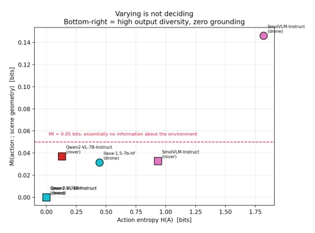
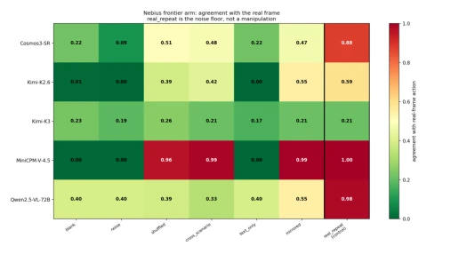

This paper serves as a "truth-revealing mirror" in the field of VLM control, sharply revealing the "Emperor's New Clothes" phenomenon in current zero-shot vision-language control. The authors do not blindly worship high reward scores, but instead use a rigorous input ablation test to prove that many models' so-called "intelligent decisions" actually rely on conservative action priors or simulator shortcuts. Most ironically, a constant deceleration strategy completely outperforms complex VLM controllers across multiple metrics, directly debunking the myth that "end-to-end equals intelligence". Although the paper points out the universal failure of VLMs in lateral geometric perception, it also uncovers their limited value in longitudinal danger detection, and proposes a remedial scheme of Symmetric Consensus Guardian. Although this "disenchantment"-style evaluation causes discomfort in the industry, it provides necessary boundary conditions for building trustworthy embodied systems. However, experiments are mainly based on simulation, and generalization capability in the real world remains an unresolved question mark.
This study aims to address an overlooked yet crucial prior question: do controllers actually use cameras? Although Vision-Language Models (VLMs) have been widely attempted as zero-shot controllers [1]-[15], reward mechanisms in simulation environments (e.g., rewarding forward movement, penalizing collisions) often allow policies to achieve high scores through conservative actions (e.g., continuous deceleration) without any visual perception. This "Shortcut Learning" (Shortcut Learning) [19] leads to aggregated metrics masking the fact that models lack true perception capabilities. Existing evaluations often focus only on task completion rates, lacking behavioral tests on visual input dependency [20][21]. If models are insensitive to images, deployment decisions based on these metrics for edge or cloud will be meaningless. Therefore, an evaluation system capable of distinguishing "visual dependency" from "action priors" must be established, to verify whether VLMs truly extract task-relevant geometric information from pixels, rather than merely responding to prompts or simulator dynamics.
The overall process constructs a hierarchical evaluation framework, core is the "Input-Ablation Battery" (Input-Ablation Battery). On the data flow, for each image frame, the model receives the same prompt under eight input conditions, only images change (including real frames, repeated frames, blank grayscale, random noise, cross-scene frames, text-only prompts, and lane axis mirrors). By comparing action consistency, calculate IDI (Image Dependency Index) and Cramér's V statistic, and introduce self-disagreement noise floor for correction. Specific module innovations include: 1) Mirror symmetry test: For vertical flip of lane axis, verify if model truly understands left/right directions (LEFT/RIGHT should swap), rather than relying on text priors. 2) Hierarchical model evaluation: Covering edge (e.g., SmolVLM), hosted (e.g., Qwen2.5-VL-72B), and structured local models (e.g., Gemma 4), comparing their visual dependency levels. 3) Symmetric Consensus Guardian: Select models based on calibration frames (Gemma 4-12B and Qwen3.5-9B), utilize 2-of-4 voting mechanism of original and mirror views, improve longitudinal danger detection accuracy under abstain strategy. 4) VLM-MPC diagnosis: Explore if low-level optimizer can recover geometric information from VLM's semantic intent, find MPC cannot repair missing visual intent. All tests exclude simulator state leakage, ensuring evaluation purity.

Fig. 2. Action entropy against mutual information with scene geometry. High entropy with near-zero MI (lower right) is the diagnostic pathology: output diversity without environmental grounding.
Experiments conducted on two embodied platforms (quadrotor drone, ground vehicle) and three simulation environments, completing 32,874 score calls in total. Baselines include constant deceleration strategy, script geometric controller, and random strategy. Main results show constant deceleration strategy outperforms script controller in distance, reward, and collision rate, and requires no visual input. Most VLM models exhibit image invariance or nearly constant action output, failing to pass joint longitudinal and lateral grounding standards. Specific findings include: 1) Image existence sensitivity: Some models (e.g., MiniCPM-V-4.5) only detect image existence or not, not content. 2) Longitudinal vs Lateral: Qwen2.5-VL-72B can grade by distance (STOP/SLOW/LEFT), but after mirror flip cannot correctly swap left/right directions, indicating lack of lateral geometric grounding. 3) Guardian effectiveness: Symmetric Consensus Guardian achieves 0.954 balanced accuracy on 272 frame holdout set, and nested leave-one-out validation is stable. 4) MPC limitations: Low-level optimizer cannot recover geometric information from collapsed visual intent. These results confirm the unreliability of VLMs as general controllers, but have potential as limited longitudinal auxiliary modules.

Fig. 3. Agreement with the real-frame action across blind-input conditions, hosted arm. Red indicates the model produces the same action whether or not it can see. real_repeat is the noise floor, not a manipulation: a light cell in that column means the model does not reproduce its own answer.